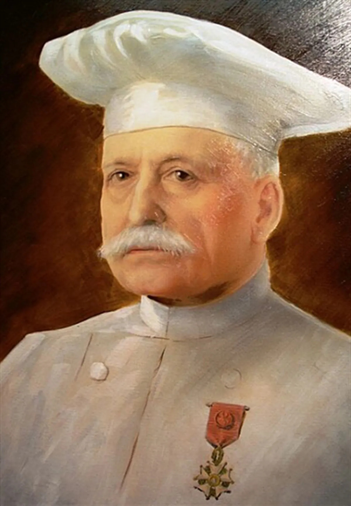

Auguste Escoffier
El creador de la cocina profesional moderna y el sistema de brigadas.

El creador de la cocina profesional moderna y el sistema de brigadas.
Revolucionó la gastronomía mundial con la cocina molecular.
Practica con el array de chefs usando los métodos push, pop, indexOf y splice.